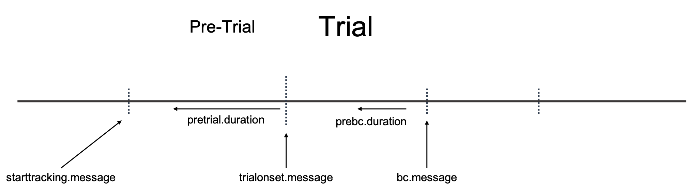

Your data file need to conatain messages that mark the onset/offset of trials, critical stimuli, and events. For instance in the image below there are Message Markers shown above each stimulus event. These are example message markers that may be contained in the data file.

For pupil_preprocess() these are the message markers you need to know
starttracking.message = ""
The first message marker is the StartTracking message. It is usually more practical to start saving data right at the beginning of a trial and stop saving at the end of a trial. This results in a smaller data file (less irrelevant data) than if you were to continously save data between trials or blocks. Different eye-tracker systems have a different default StartTracking message.
starttracking.message is used to correctly set the trial index in the data file when importing the data file with pupil_read().
The SMI default is : “StartTracking.bmp”
This parameter can be set to starttracking.message <- "default" to use the eyetracker default. If you are not using the default message then you need to specify the custom string you used.
In the case where you continuously saved data and do not have a StartTracking message at the start of each trial, you can use the first stimulus event (usually the pre-trial event) as the StartTracking message. For instance, in the Trial Procedure image above the first stimulus event with a message marker is Fixation. Therefore, you could set starttracking.message <- "Fixation" if you do not have StartTracking message at the start of each trial.
starttracking.match = c("exact", "pattern")
There is an additional parameter starttracking.match that specifies whether starttracking.message needs to be an "exact" or a "pattern" match. This simply allows more flexibility. Such as, if the start recording message is different on each trial “TRIALID [trial number]”, then a "pattern" match will need to be used to correctly set the trial index.
trialonset.message = ""
trialonset.message is the message in the data file that marks the onset of a trial. If you included a fixation as an inter-trial-interval (ITI) at the start of every trial, then the trial onset should correspond to the stimulus after the fixation or ITI stimulus. The fixation (ITI) period will be treated as a pre-trial period.
In the Trial Procedure image above, we would set trialonset.message <- "Cue".
trialonset.message is used to set the timing relative to trial onset using set_timing(). Pre-trial periods will have a negative Time value, relative to trial onset.
trialonset.match = c("exact", "pattern")
There is an additional parameter trialonset.match that specifies whether trialonset.message needs to be an "exact" or a "pattern" match. This simply allows more flexibility in how researchers may have included message markers in their task. "pattern" should be used if the trialonset.message marker is different on every trial (this can happen if the message includes information about the trial number). Within a trial, trialonset.match will only take the first match that occurs as the trialonset.message.
Such as, if the start recording message is different on each trial “TRIALID [trial number]”, then a "pattern" match will need to be used to correctly set the trial index.
pretrial.duration = ""
The duration of the pre-trial period is set relative to the timing of the trialonset.message and that duration is specified by pretrial.duration.
For instance if pretrial.duration <- 2000, then the 2000 milliseconds before trialonset.message will be marked as a pre-trial period. This duration typically corresponds to the duration of the ITI period.
bconset.message = ""
bconset.message is the message that marks the onset of the critical task period that needs to be baseline corrected.
For instance, in the Trial Procedue image above, we would set bconset.message <- "Stimulus".
bconset.message is used for baseline correction in pupil_baselinecorrect().
bconset.match = c("exact", "pattern")
There is an additional parameter bconset.match that specifies whether bconset.message needs to be an "exact" or a "pattern" match. This simply allows more flexibility in how researchers may have included message markers in their task. "pattern" should be used if the baselineoffset.message marker is different on every trial (this can happen if the message includes information about the trial number). Within a trial, bconset.match will only take the first match that occurs as the bconset.message.
No Message Markers in Data File?
If you were not able to sync events in your experimental software to the eyetracking data file you will need to insert Message Markers with an external file that has timing data in it. Your data file would be missing critical information to apply preprocessing and analysis procedures. You would not know when certain events actually occured. This is illustrated in the image below.

Notice there are no message markers, and the dotted lines represent that the data file does not contain any information as to when these events actually occured.
See the Article Example Data Set - without Message Markers for an example of how to insert the messages into the data file.